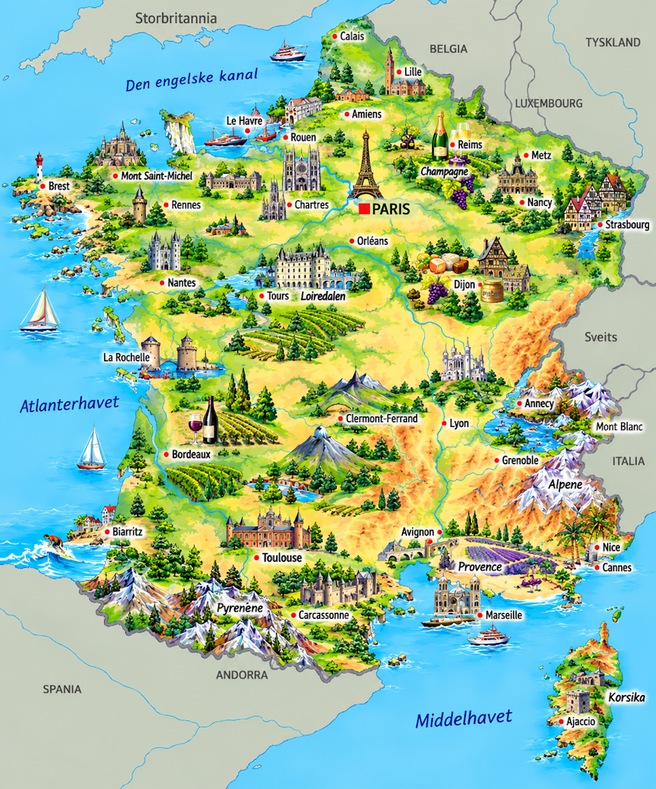
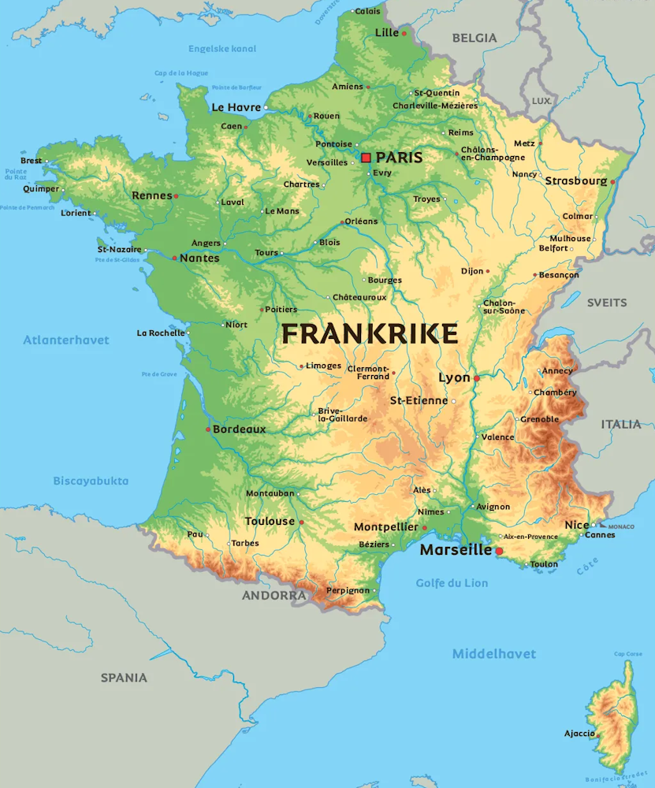

⚡ Korte fakta om Frankrike
🗺️ Kart over Frankrike
Klikk på et av kartene for å åpne og zoome i fullskjerm!


1. Natur og klima
Frankrike kalles ofte for «l’Hexagone» (sekskanten) på grunn av sin form! Landet har alt fra høye, snødekte fjell til lange solfylte sandstrender ved Middelhavet.
Europas høyeste fjell vest for Kaukasus heter Mont Blanc og er hele 4 807 meter høyt!
Kysten i sør (Côte d'Azur) har varmt klima, krystallklart vann og er et berømt feriested.
Her finner du grønne daler, store skoger, vindyrkede åser og dramatiske fjellkjeder som Alpene og Pyreneene.
Dyreliv: I fjellene bor det gemser (en slags fjellgeit), marmoter og til og med brunbjørn og ulv. Langs kysten finner du flamingoer!
2. Folk og samfunn
I Frankrike bor det ca. 68 millioner mennesker. Franskmenn er stolte av sin matkultur, kunst, mote og livsstil!
🏢 Største byer i Frankrike
- 🔹 Paris: Hovedstaden kjente for Eiffeltårnet og Louvre-museet!
- 🔹 Marseille: Den eldste kystbyen helt i sør ved Middelhavet.
- 🔹 Andre store byer: Lyon (mat-hovedstaden), Toulouse og Nice.
🥖 Matkultur & «Art de Vivre»
Fransk mat regnes som en av verdens beste! Nybakte baguetter, sprø croissanter og fantastiske oster spises hver dag.
Sitatet «Joie de vivre» betyr «livsglede» – å kos seg med god mat og familie er kjernen i fransk kultur.
🗣️ Språk og Franskfoni
Sproget er fransk, og det er et av de mest lærte språkene i verden. Over 300 millioner mennesker verden over snakker fransk!
3. Stat og politikk
Frankrike er en republikk. Det betyr at de ikke har konge eller dronning, men velger en president!
Laster...
Frankrikes president og øverste leder.
Laster...
Statsministeren som leder regjeringen.
Nationalforsamlingen
Det franske parlamentet holder til i Palais Bourbon i Paris.
📍 Frankrikes motto er: «Liberté, Égalité, Fraternité» (Frihet, likhet, brorskap).
4. Frankrikes historie
🛡️ Gallerne og Romerriket
I oldtiden bodde gallerne her (kjent fra tegneserien Asterix!). Julius Cæsars romere erobret landet for 2 000 år siden.
🏰 Solkongen og Versailles (1600-tallet)
Kong Ludvig 14. («Solkongen») bygde det fantastiske slottet i Versailles og gjorde Frankrike til stormakt.
 Den franske revolusjon (1789)
Den franske revolusjon (1789)
Folket gjorde opprør mot kongen for å få mer rettferdighet. Bastillen ble stormet 14. juli (nasjonaldagen).
⚔️ Napoleon Bonaparte (1804)
Napoleon kronet seg selv til keiser og erobret nesten hele Europa før han til slutt ble beseiret.
🗼 Eiffeltårnet og Modernitet (1889)
Eiffeltårnet ble bygget til verdensutstillingen i Paris og ble et verdenskjent symbol på landet.
5. Økonomi og næringsliv
Hva lever de av i Frankrike? Frankrike er en av verdens største økonomier, kjent for alt fra fly til mote og turisme!
Luftfart & Teknikk
Airbus-flybyggerne har hovedkontor i Toulouse.
Mote & Luksus
Kjente merker som Chanel, Dior og Louis Vuitton.
Landbruk & Ost
Produserer over 1000 forskjellige typer ost!
Turisme
Verdens mest besøkte land av turistene!
6. Kultur og underholdning
🏫 Skole og sport
Skolen i Frankrike er strengere enn i Norge. Barn begynner i «École maternelle» når de er små.
⚽ Frankrikes mest populære sporter:
Fotball (vant VM i 1998 og 2018!), rugby og sykkelløpet Tour de France!
🌟 Kjente franskmenn
- 🎨 Claude Monet: Berømt maler som malte vakre åkrer og vannliljer.
- ⚽ Kylian Mbappé: En av verdens aller beste fotballspillere.
- 🧪 Marie Curie: Dobbelt nobelprisvinner i fysikk og kjemi.
- 📚 Jules Verne: Skrev spennende bøker som «En verdensomseiling under havet».
🧠 Test deg selv: Frankrike-Quiz!
Spørsmål laster...